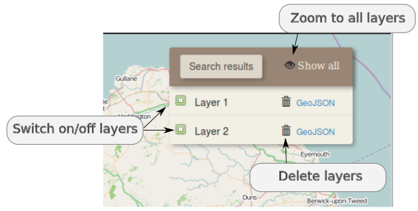
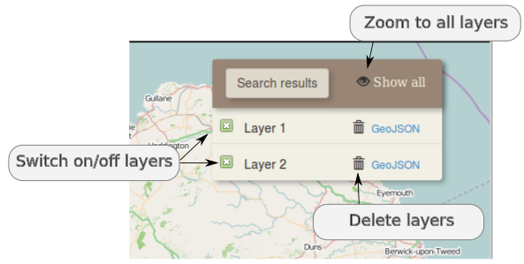

Example 1: Search a place by location, coordinates or postcode
1. Click on the red button, on the right side of the page. A panel with different options will appear. Type a location of your preference on the respective text box and select a result of the autocomplete menu (fig. left). The result will appear on the map and the a zoom extent will automatically be set. On the autocomplete menu, the icon on the right of the resulted locations indicates if the location will appear on the map as a point or as a polygon (fig. right), while the italic text next to the location name indicates the feature type of each result (e.g. cities, mountain, village etc.)

2. Besides location, a place can be searched by inserting latitude and longitude coordinates on the coordinates text box or by typing a postcode on the equivalent text box. In both cases, when pressing the Enter key in a textbox, the browser will automatically display the resutls.
3. The data are retrieved from different data sources. When a result is selected, is displayed on the map and a popup windows appears (fig. left). This window contains metadata information for the spatial object and by clicking on the marker it can be switched on and off.
If the user selects "United Kingdom" in the country text box, an option to retrieve data only from ordnance survey appears (fig. right).
4. The results can be manipulated on the "search result" panel, on the right side of the map. Each layer can be switched on/off by clicking on the check box on the left of the layer name or can be deleted by clicking the rubbish bin icon. The "Show all" icon on the search result panel sets the zoom extent of the map so as all the layers to be visible
 
